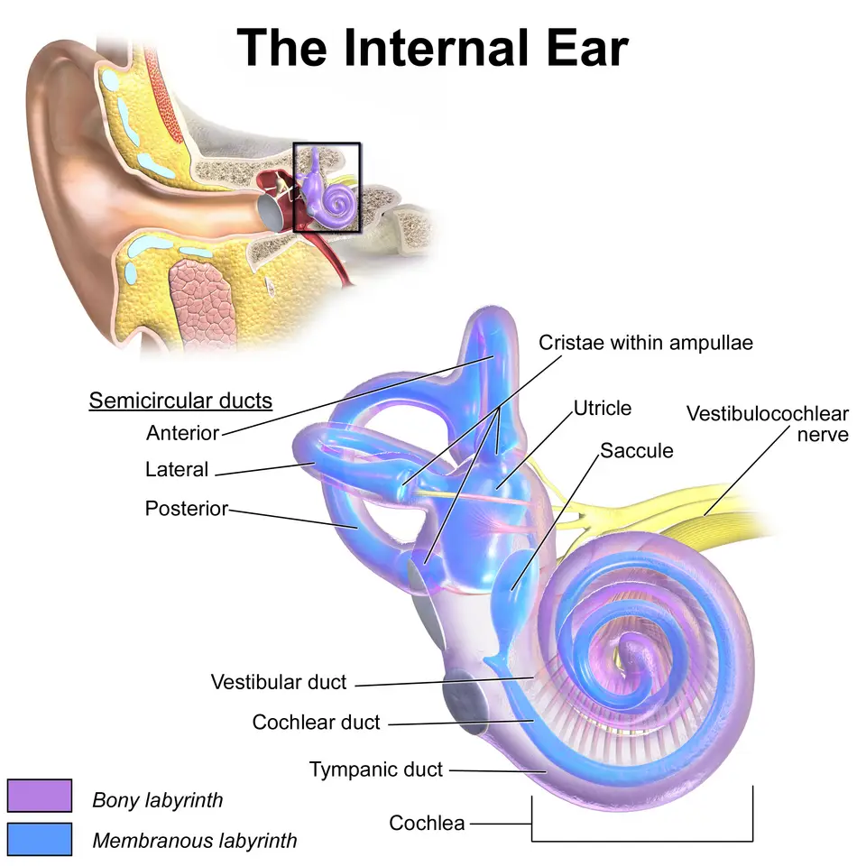

DX.6 — Surdité brusque neurosensorielle 🚩
La surdité brusque fait perdre en moins de 72 heures, le plus souvent d'un seul côté, une audition de perception ; le tympan reste normalS1S2. Le médecin de premier recours l'adresse à l'oto-rhino-laryngologiste (ORL) dans les 24 heures, car le traitement par corticoïdes donne de meilleurs résultats lorsqu'il débute tôtS3S2.
1. Définition
La Revue médicale suisse définit la surdité brusque comme une surdité neurosensorielle isolée d'au moins 30 dB sur trois fréquences consécutives, installée en 24 à 72 heuresS1.
2. Épidémiologie (Suisse, puis Europe)
Les sources lues ne donnent pas d'incidence suisse ; l'étude européenne de référence compte 160 cas par an pour 100 000 habitants à DresdeS8. Selon la revue du Centre hospitalier universitaire vaudois (CHUV), cette incidence reste probablement sous-estimée, car la guérison spontanée dispense de nombreux patients de consulterS1. L'affection touche tous les âges, mais elle prédomine après 65 ans, avec un âge moyen proche de 50 ansS1. Les chiffres utiles comparent les populations, et la part des causes identifiées fixe l'enjeu du bilan.
Chiffres utiles : incidence, âge, côté
| Donnée | Valeur | Population et année | Source |
|---|---|---|---|
| Incidence de la forme idiopathique | 160 pour 100 000 habitants par an | Dresde, 659 cas en 2004 pour 487 421 habitants | S8 |
| Estimation ancienne des pays industrialisés | 5 à 20 pour 100 000 | Recommandation allemande antérieure | S4S8 |
| Estimation haute récente | Jusqu’à 400 pour 100 000 | Revue allemande, 2017 | S4 |
| Incidence selon l’âge | De 11 pour 100 000 avant 18 ans à 77 pour 100 000 après 65 ans | États-Unis, donnée non européenne citée par le CHUV | S1 |
| Âge moyen | Environ 50 ans | Revue du CHUV, 2021 | S1 |
| Pic d’incidence | Entre 50 et 60 ans | Revue française, 2025 | S10 |
| Atteinte bilatérale | Jusqu’à 3 % (CHUV) ; jusqu’à 8,6 % (revue française) | 2021 et 2025 | S1S10 |
L'étude de Dresde conclut que la surdité brusque n'est pas une maladie rare, puisqu'elle dépasse le seuil européen de 50 cas pour 100 000 habitantsS8. Le rapport des sexes est équilibré avant 65 ans et penche légèrement vers les hommes ensuite, selon la revue lausannoiseS1.
Part des causes identifiées et des tumeurs
| Donnée | Valeur | Source |
|---|---|---|
| Forme idiopathique après bilan complet | 70 à 90 % des cas | S1 |
| Étiologies connues | Environ 10 à 30 % des cas | S1 |
| Cause infectieuse ou tumorale trouvée aux Hôpitaux universitaires de Genève (HUG) | Moins de 10 % des patients | S2 |
| Neurinome de l’acoustique | 1 % des surdités brusques | S1 |
| Schwannome vestibulaire à l’imagerie par résonance magnétique (IRM) | 8 patients sur 198, soit 4 %, dans une série allemande | S4 |
| Schwannome vestibulaire dans l’essai HODOKORT | 17 patients sur 325, soit 5 % | S5 |
Ces chiffres justifient l'imagerie même après récupération, car une tumeur peut se cacher derrière une surdité qui guéritS4.
3. Physiopathologie
La forme idiopathique reste sans cause démontrée ; la revue du CHUV retient quatre hypothèses principales, virale, vasculaire, pressionnelle et auto-immuneS1. L'hypothèse vasculaire repose sur la fragilité de la cochlée, dont le potentiel d'action disparaît en 60 secondes en cas d'anoxieS1. L'artère labyrinthique naît le plus souvent de l'artère cérébelleuse antéro-inférieure, si bien qu'une occlusion de cette artère peut associer surdité, vertige et signes neurologiquesS4S1. La base anatomique, les hypothèses et la corrélation clinique relient ces mécanismes aux décisions.
Base à connaître : l’oreille interne
Oreille interne en couleurs. Ce schéma de Blausen Medical montre le labyrinthe osseux et membraneux, la cochlée, le saccule, les canaux semi-circulaires et le nerf vestibulocochléaireS11.

Le lecteur cherche d'abord seul la cochlée, le vestibule et le nerf, puis il ouvre la copie annotée.
- 1. La cochlée est le siège de la surdité de perception ; l'audiogramme y mesure donc la perte fréquence par fréquenceS11S1.
- 2. Le canal cochléaire contient l'endolymphe ; une rupture de la membrane de Reissner mélange endolymphe et périlymphe selon l'hypothèse pressionnelleS11S1.
- 3. Le saccule appartient au vestibule ; son atteinte explique le vertige associé, qui assombrit le pronosticS11S1.
- 4. Les canaux semi-circulaires participent à l'équilibre ; le test d'impulsion céphalique explore leur réflexeS11S4.
- 5. Le nerf vestibulocochléaire relie l'oreille interne au tronc cérébral ; un schwannome y siège et peut débuter comme une surdité brusqueS11S4.
Le cadre noir du schéma en haut à gauche situe ce labyrinthe derrière le tympan et les osselets, que l'otoscopie trouve normaux dans la surdité brusqueS11S1.
Hypothèses physiopathologiques et arguments
| Hypothèse | Mécanisme | Argument clinique | Conséquence | Source |
|---|---|---|---|---|
| Virale | Infection ou réactivation dans l’oreille interne ou le nerf cochléaire | Infection respiratoire haute contemporaine ; herpès simplex de type 1 suspecté | Antiviraux sans preuve d’efficacité | S1 |
| Vasculaire | Hémorragie, thrombose ou spasme | Patient âgé avec facteurs de risque, début très brutal, récidive | Rationnel des antiagrégants et de l’oxygène hyperbare | S1 |
| Pressionnelle | Rupture de la membrane de Reissner ou de la fenêtre ronde | Effort, éternuement, plongée ou vol au début | Exploration de la caisse discutée | S1 |
| Auto-immune | Atteinte inflammatoire de l’oreille interne | Surdité rapidement progressive, récidivante, controlatérale différée, maladie auto-immune connue | Bilan immunologique ciblé | S1 |
| Génétique | Déficit en connexine 26 par exemple | Formes bilatérales souvent asymétriques | Avis spécialisé | S1 |
Corrélation : mécanisme, signe, examen, décision
| Mécanisme | Signe | Examen qui le montre | Décision | Source |
|---|---|---|---|---|
| Atteinte cochléaire | Surdité de perception unilatérale | Weber vers l’oreille saine, audiogramme | ORL dans les 24 heures | S1S3 |
| Atteinte vestibulaire associée | Vertige, nystagmus | Tests vestibulaires | Pronostic plus sombre, recherche d’un accident vasculaire | S1S4 |
| Ischémie du territoire de l’artère cérébelleuse antéro-inférieure | Diplopie, paralysie faciale, ataxie, dysarthrie | Examen neurologique, imagerie | Filière de l’accident vasculaire cérébral | S4S3 |
| Tumeur du nerf ou du labyrinthe | Surdité qui peut même récupérer | IRM des rochers avec contraste | Imagerie après chaque surdité brusque | S4 |
| Rupture de fenêtre après barotraumatisme | Surdité après plongée ou vol | Scanner des rochers en urgence | Recherche d’un pneumolabyrinthe | S1 |
4. Démarche diagnostique
Le médecin confirme d'abord une surdité de perception à tympan normal, puis il exclut les causes connues, qui représentent environ 10 à 30 % des casS1. Le National Institute for Health and Care Excellence (NICE) britannique impose d'adresser dans les 24 heures toute surdité installée en trois jours ou moins au cours des 30 derniers joursS3. La recherche étiologique ne doit pas retarder le traitement ; l'absence d'audiogramme immédiat ne justifie donc pas d'attendreS1. La démarche en six étapes, le tableau comparatif et les pièges détaillent ces décisions.
Démarche en six étapes, de l’accueil au suivi
| Étape | Question | Geste | Décision | Source |
|---|---|---|---|---|
| 1 | La perte s’est-elle installée en 3 jours ou moins ? | Anamnèse datée | Oui, depuis moins de 30 jours : avis ORL ou urgence dans les 24 heures ; plus ancienne : sous 2 semaines | S3 |
| 2 | Un signe neurologique accompagne-t-il la surdité ? | Face, sensibilité, oculomotricité, marche | Oui : filière de l’accident vasculaire cérébral | S3S4 |
| 3 | Le conduit et le tympan sont-ils normaux ? | Otoscopie | Non : traiter la cause de transmission | S1 |
| 4 | La surdité est-elle de perception ? | Weber, Rinne, acoumétrie vocale | Weber vers l’oreille saine : perception | S1 |
| 5 | Une cause connue est-elle probable ? | Bruit, traumatisme, médicament ototoxique, infection, barotraumatisme | Oui : traitement étiologique, corticoïde possible en parallèle | S1 |
| 6 | Quelle évolution ? | Audiogramme initial puis de contrôle, IRM | Échec : traitement de sauvetage ; séquelle : réhabilitation | S1S10 |
Tableau comparatif : surdité brusque et diagnostics voisins
| Diagnostic | Installation | Otoscopie | Diapason | Élément qui tranche | Source |
|---|---|---|---|---|---|
| Surdité brusque (DX.6) | 24 à 72 heures | Normale | Weber vers l’oreille saine | Perte de perception d’au moins 30 dB sur 3 fréquences | S1 |
| Bouchon de cérumen (DX.1) | Rapide, avec plénitude | Cire qui masque le tympan | Weber vers l’oreille bouchée | Retrait du bouchon | S1 |
| Maladie de Ménière (DX.7) | Crises répétées | Normale | Perception | Surdité fluctuante, souvent des graves, avec vertiges | S4S1 |
| Schwannome vestibulaire (DX.8) | Brusque ou progressive | Normale | Perception | IRM avec contraste | S4 |
| Accident vasculaire du territoire cérébelleux antéro-inférieur | Brutale | Normale | Perception | Signes neurologiques associés | S4S1 |
| Surdité due au bruit (DX.5) | Après exposition | Normale | Perception | Anamnèse d’exposition sonore | S1 |
| Fistule périlymphatique | Après plongée, effort ou vol | Normale | Perception | Contexte pressionnel, scanner des rochers | S1 |
Pièges de la démarche diagnostique
| Piège | Conséquence | Parade | Source |
|---|---|---|---|
| Prendre la plénitude pour un bouchon | Retard de consultation et de traitement | Otoscopie : un conduit libre exclut le bouchon | S1 |
| Attendre l’audiogramme pour traiter | Perte de temps | Le diapason oriente, et l’ORL traite sans attendre | S1 |
| Négliger un vertige | Accident vasculaire méconnu | Recherche d’une déviation oblique, d’un nystagmus central et test d’impulsion céphalique | S4 |
| Renoncer à l’IRM parce que l’audition revient | Schwannome méconnu | IRM même après récupération complète | S4S1 |
| Tenir une forme bilatérale pour idiopathique | Cause systémique méconnue | Bilan rapide : la forme bilatérale est rarement idiopathique | S4 |
5. Anamnèse ciblée et drapeaux rouges
L'anamnèse date le début, parfois constaté au réveil, et recherche une plénitude d'oreille, qui peut faire croire à un bouchon de cérumenS1. Plus de 90 % des patients ont un acouphène du même côté et 20 à 60 % ont des vertiges, alors qu'une otalgie ou des paresthésies restent occasionnellesS1. Elle recherche ensuite les causes connues et les facteurs de risque, car leur présence change le bilan et parfois le traitementS1. Les questions ciblées, les drapeaux rouges et les populations particulières précisent cette étape.
Questions ciblées et ce que la réponse change
| Question | Réponse qui oriente | Ce qu’elle change | Source |
|---|---|---|---|
| Quand exactement l’audition a-t-elle baissé ? | En 3 jours ou moins, depuis moins de 30 jours | Avis dans les 24 heures | S3 |
| Avez-vous des facteurs de risque cardiovasculaire ? | Oui, chez un patient âgé | Hypothèse vasculaire | S1 |
| Avez-vous été exposé à un bruit intense ? | Oui | Traumatisme sonore | S1 |
| Avez-vous eu une infection récente ? | Oui | Hypothèse virale ou infectieuse | S1 |
| Avez-vous eu une morsure de tique ou une prise de risque sexuelle ? | Oui | Sérologies de borréliose, syphilis, VIH (virus de l’immunodéficience humaine) | S1 |
| Avez-vous une maladie auto-immune ou une kératite ? | Oui | Cause auto-immune, syndrome de Cogan | S1 |
| Avez-vous plongé, pris l’avion ou subi un traumatisme crânien ? | Oui | Barotraumatisme, fistule, scanner urgent | S1 |
| Prenez-vous un médicament ototoxique ? | Oui | Cause médicamenteuse | S1 |
| Avez-vous déjà eu une surdité ou des crises de vertige ? | Oui, avec fluctuation | Maladie de Ménière | S1S4 |
Drapeaux rouges et délai de réponse
| Drapeau rouge | Diagnostic à craindre | Délai et filière | Source |
|---|---|---|---|
| Asymétrie faciale ou trouble sensitif du même côté | Accident vasculaire ou lésion de l’angle | Dans les 24 heures ; filière de l’accident vasculaire si suspecté | S3 |
| Vertige avec diplopie, dysarthrie, ataxie ou nystagmus vertical | Infarctus du territoire cérébelleux antéro-inférieur | Urgence neurologique | S4 |
| Surdité bilatérale brutale | Cause vasculaire, métabolique, immunologique, infectieuse ou tumorale | Bilan rapide | S4 |
| Surdité après barotraumatisme | Fistule périlymphatique, pneumolabyrinthe | Scanner des rochers en urgence | S1 |
| Patient immunodéprimé avec otalgie et otorrhée sans réponse en 72 heures | Infection grave | ORL dans les 24 heures | S3 |
Populations particulières
| Population | Particularité | Conduite | Source |
|---|---|---|---|
| Patient de plus de 60 ans | Pronostic moins bon | Même urgence ; informer sur le risque de séquelle | S1 |
| Patient diabétique | Une corticothérapie courte à forte dose peut déséquilibrer la glycémie | Surveiller la glycémie | S10 |
| Comorbidités qui contre-indiquent la forte dose systémique | Diabète, hypertension mal contrôlée, ulcère gastrique, trouble psychiatrique | Voie intratympanique discutée | S1 |
| Femme enceinte | Prednisone réservée aux situations clairement nécessaires | Décision ORL selon l’information professionnelle suisse (AIPS) | S13 |
| Femme qui allaite | L’AIPS interdit l’allaitement pendant la corticothérapie systémique | Discussion du traitement avant de prescrire | S13 |
6. Examen physique ciblé, région par région
L'examen confirme une surdité neurosensorielle isolée : il explore l'oreille externe et le tympan, l'audition au diapason et à la voix, puis l'équilibre et les nerfs crâniensS1. Chaque région a sa fenêtre : oreille externe et tympan, diapason, acoumétrie vocale, équilibre et oculomotricité et état général. La recommandation allemande ajoute la mesure de la pression artérielle aux gestes indispensables, ce qui rappelle l'hypothèse vasculaireS4.
Région 1 — Oreille externe et tympan
Oreille externe, moyenne et interne. Ce schéma en couleurs de Blausen Medical situe le conduit, le tympan, les osselets, la cochlée et le nerf vestibulocochléaireS12.

Le lecteur repère d'abord seul les étages de l'oreille que l'otoscope voit et ceux qu'il ne voit pas, puis il ouvre la copie annotée.
- 1. Le conduit doit être libre : un bouchon ferait conclure à tort à une surdité de transmissionS12S1.
- 2. Le tympan doit être intact et mobile à l'otoscope pneumatique, ce qui exclut une cause de l'oreille moyenneS12S1.
- 3. Les osselets transmettent le son ; ils sont normaux dans la surdité brusque, d'où un Rinne positifS12S1.
- 4. La cochlée est le siège présumé de l'atteinte idiopathiqueS12S4.
- 5. Le nerf vestibulocochléaire porte parfois la cause, comme un schwannome, ce que seule l'IRM montreS12S4.
Région 2 — Audition au diapason
| Test | Résultat dans la surdité brusque | Résultat qui fait changer de diagnostic | Source |
|---|---|---|---|
| Weber | Latéralisé vers l’oreille saine | Latéralisé vers l’oreille atteinte : transmission | S1 |
| Rinne | Positif des deux côtés | Négatif du côté atteint : transmission | S1 |
Le diapason distingue la surdité neurosensorielle de la surdité de transmission, ce qui permet de décider de l'urgence avant l'audiogrammeS1.
Région 3 — Acoumétrie vocale
| Geste | But | Source |
|---|---|---|
| Voix chuchotée, parlée, puis criée | Estimer la sévérité de la perte | S1 |
| Doigt sur le tragus de l’oreille opposée | Masquer l’oreille saine | S1 |
| Examinateur placé derrière le patient | Empêcher la lecture labiale | S1 |
Cette acoumétrie reste un examen de débrouillage, car l'audiogramme tonal seul quantifie la perte et sert de référence pour le suiviS1.
Région 4 — Équilibre, oculomotricité et nerfs crâniens
| Examen | Résultat périphérique rassurant | Résultat central inquiétant | Source |
|---|---|---|---|
| Test d’impulsion céphalique | Saccade de rattrapage du côté atteint | Test normal malgré un vertige aigu | S4 |
| Recherche d’une déviation oblique | Absente | Présente | S4 |
| Nystagmus spontané | Périphérique, freiné par la fixation | Vertical ou évoqué par le regard dans l’autre sens | S4 |
| Poursuite oculaire | Lisse | Saccadée | S4 |
| Nerf facial et sensibilité de la face | Normaux | Atteinte du même côté : avis dans les 24 heures | S3S4 |
La revue allemande juge la recherche d'une déviation oblique plus sensible et plus spécifique qu'une IRM de diffusion au début d'un syndrome vestibulaire aiguS4.
Région 5 — État général et pression artérielle
7. Approche syndromique
La surdité brusque réalise un syndrome de surdité de perception unilatérale aiguë, isolée ou associée à un syndrome vestibulaireS1S4. Les causes identifiables sont plus souvent bilatérales, moins aiguës, fluctuantes ou accompagnées de signes neurologiques, ce qui aide à les reconnaîtreS1. Le tableau des syndromes oriente chaque association vers sa cause probable.
Syndromes et diagnostics associés
| Présentation | Orientation | Conduite | Source |
|---|---|---|---|
| Surdité de perception isolée et unilatérale | Surdité brusque idiopathique après bilan | Corticothérapie et IRM | S1 |
| Surdité et vertige sans signe central | Atteinte cochléovestibulaire, pronostic plus sombre | Bilan vestibulaire | S1S10 |
| Surdité, vertige et signes neurologiques focaux | Accident vasculaire du territoire cérébelleux antéro-inférieur | Urgence neurologique | S4 |
| Surdité fluctuante des graves, avec ou sans crises de vertige | Maladie hydropique de l’oreille interne, maladie de Ménière | Avis ORL, IRM avec séquence d’hydrops | S4S10 |
| Surdité bilatérale | Cause vasculaire, métabolique, immunologique, infectieuse, tumorale ou toxique | Bilan rapide | S4 |
| Surdité après traumatisme crânien ou barotraumatisme | Fistule, contusion labyrinthique | Scanner des rochers | S1S4 |
8. Diagnostic positif et critères
Le diagnostic positif exige un audiogramme tonal : une perte de perception d'au moins 30 dB sur trois fréquences consécutives, installée en moins de 72 heuresS1S10. Les HUG retiennent une baisse supérieure à 30 décibels survenue en moins de 72 heures sans raison apparente, en général d'un seul côtéS2. Le qualificatif d'idiopathique n'est acquis qu'après un bilan négatif, puisque 10 à 30 % des cas ont une cause connueS1. Les critères et les types de courbe audiométrique donnent aussi les premiers éléments de pronostic.
Critères diagnostiques et leurs limites
| Critère | Valeur | Remarque | Source |
|---|---|---|---|
| Perte auditive | Au moins 30 dB | Aucun consensus international sur la définition | S1S4 |
| Étendue | Au moins 3 fréquences consécutives | Le critère ne précise pas la zone de fréquences | S1S4 |
| Délai d’installation | 24 à 72 heures | Le patient la découvre parfois au réveil | S1 |
| Type | Neurosensorielle | Conduit et tympan normaux | S1 |
| Côté | Le plus souvent unilatérale | Une forme bilatérale fait chercher une cause systémique | S2S4 |
| Cause | Aucune après bilan | Sinon, surdité brusque symptomatique | S1 |
La revue allemande rappelle que le critère des 30 dB sur trois fréquences ne fixe aucune zone de fréquences, ce qui complique la comparaison des étudesS4.
Types de courbe audiométrique et récupération
| Type | Aspect | Mécanisme évoqué | Récupération | Source |
|---|---|---|---|---|
| A | Courbe ascendante | Hydrops endolymphatique | Bon pronostic, 63 à 68 % | S1 |
| B | Courbe en plateau | Atteinte striale ou artériolaire | Pronostic moyen, 48,5 à 63 % | S1 |
| C | Courbe descendante | Atteinte virale ou vasculaire | Mauvais pronostic | S1 |
| D | Scotome | Rupture de la membrane de Reissner | Pronostic réservé | S1 |
| E | Cophose | Atteinte infectieuse ou thrombose artérielle | Mauvais pronostic, 11,5 à 43 % | S1 |
Les pertes des basses fréquences récupèrent dans 63 à 88 % des cas, contre 19 à 38 % pour les courbes descendantesS1.
9. Examens complémentaires
L'audiométrie tonale se fait dès que possible, car elle confirme le diagnostic et sert de référence pour le suivi ; sa non-disponibilité ne retarde toutefois pas le traitementS1. Le consensus espagnol rend obligatoires otoscopie, acoumétrie, audiométrie tonale et vocale et tympanométrie, afin d'écarter une cause de transmissionS9. L'IRM est demandée qu'il y ait récupération ou non ; au CHUV, elle se fait dans les trois mois suivant le début des symptômesS1. Les examens ciblés, la biologie et l'imagerie détaillent indication, seuil, interprétation et conduite.
Examens ciblés : indication, seuil, interprétation, conduite
| Examen | Indication | Seuil ou résultat | Interprétation | Conduite | Source |
|---|---|---|---|---|---|
| Audiométrie tonale | Tout patient, dès que possible | Au moins 30 dB sur 3 fréquences consécutives | Surdité brusque confirmée | Corticothérapie, IRM | S1 |
| Audiométrie tonale | Surdité sans signe localisateur | Asymétrie de 15 dB ou plus sur 2 fréquences voisines | Asymétrie significative | IRM des conduits auditifs internes | S3 |
| Audiométrie vocale | Tout patient | Test des monosyllabes de Fribourg à 65 et 80 dB SPL (niveau de pression acoustique) | Retentissement fonctionnel | Base de la réhabilitation | S4S9 |
| Tympanométrie | Tout patient | Courbe normale | Pas de cause de transmission | Poursuivre le bilan de perception | S9 |
| Otoémissions acoustiques | Selon le cas | Présentes tôt | Bon pronostic de récupération | Information du patient | S4 |
| Potentiels évoqués auditifs du tronc cérébral | IRM impossible | Anomalie rétrocochléaire | Lésion du nerf possible | Avis spécialisé | S1S4 |
| Tests vestibulaires | Vertige associé | Déficit périphérique | Atteinte associée | Pronostic, rééducation | S10 |
La recommandation allemande conseille d'éviter, les premiers jours, les examens bruyants comme le réflexe stapédien ou l'IRM, lorsque c'est possibleS4.
Biologie ciblée : divergence entre sources
| Référence | Position | Examens | Source |
|---|---|---|---|
| CHUV, 2021 | Bilan ciblé selon l’anamnèse, l’examen et le contexte endémique | Formule sanguine, hormones thyroïdiennes, lipides, crase, bilan métabolique avec hémoglobine glyquée, protéine C-réactive, vitesse de sédimentation, anticorps antinucléaires et anticytoplasme des neutrophiles, sérologies du VIH, de l’herpès simplex, de la syphilis et de Borrelia, électrophorèse des protéines | S1 |
| Recommandation allemande, 2017 | Examens utiles dans certains cas, mais aucun en routine | Glycémie, protéine C-réactive, procalcitonine, formule, créatinine, fibrinogène ; sérologies borréliose, syphilis, herpès, varicelle-zona, cytomégalovirus, VIH | S4 |
| Revue française, 2025, d’après la recommandation américaine | Aucun bilan biologique recommandé pour le diagnostic | — | S10 |
Le cours suit la position suisse : la biologie se choisit selon le contexte, ce qui permet de dépister une cause traitable sans multiplier les coûtsS1.
Imagerie : quand, quoi, pourquoi
| Élément | Règle | Source |
|---|---|---|
| Indication | Toute surdité brusque, même après récupération complète | S1S4 |
| Délai | Dans les 3 mois au CHUV ; idéalement dans les 15 jours selon le consensus espagnol | S1S9 |
| Technique | IRM des rochers en coupes fines avec contraste, et non simple IRM de la tête | S4 |
| Question au radiologue | Exclure explicitement un schwannome intralabyrinthique | S4 |
| Lésions recherchées | Neurinome, carcinose méningée, ischémie, saignement intracochléaire, sclérose en plaques | S1 |
| IRM impossible | Angio-scanner et potentiels évoqués auditifs | S1 |
| Scanner des rochers | En urgence après barotraumatisme, pour un pneumolabyrinthe ; pas en routine | S1S4 |
Une IRM pathologique liée à la surdité a été trouvée chez 83 patients sur 198, soit 41,9 %, dans une série allemande de surdités sévèresS4.
10. Arbre décisionnel
L'arbre commence par l'urgence neurologique, confirme la perception, puis traite sans attendre le bilan, et se termine par l'évaluation de la récupérationS3S1. L'arbre décisionnel détaillé précise chaque nœud, car chacun appelle une conduite et un délai.
- Si un signe neurologique accompagne la surdité, le médecin suit la filière de l'accident vasculaire cérébralS3.
- Si le conduit est libre et que le Weber latéralise vers l'oreille saine, il adresse le patient à l'ORL dans les 24 heuresS1S3.
- L'ORL confirme la perte à l'audiogramme, recherche une cause et décide d'une corticothérapie, orale ou intraveineuse selon la sévéritéS1S2.
- Sans récupération, il discute un traitement de sauvetage ; après six semaines, il propose une réhabilitation auditiveS1.
Arbre décisionnel détaillé
| Nœud | Si oui | Si non | Source |
|---|---|---|---|
| Signe neurologique focal ou vertige avec signe central ? | Filière de l’accident vasculaire cérébral | Nœud suivant | S3S4 |
| Conduit ou tympan anormal ? | Traiter la cause de transmission | Nœud suivant | S1 |
| Installation en 3 jours ou moins, depuis moins de 30 jours ? | ORL ou urgence dans les 24 heures | ORL dans les 2 semaines | S3 |
| Cause connue probable ? | Traitement étiologique, corticoïde possible en parallèle | Corticothérapie de la forme idiopathique | S1 |
| Perte légère ? | Traitement oral ambulatoire de 7 jours au CHUV | Hospitalisation et voie intraveineuse de 48 heures au CHUV | S1 |
| Récupération insuffisante à la réévaluation ? | Injections intratympaniques ou exploration de la caisse | Suivi audiométrique | S1 |
| Perte persistante après 6 semaines ? | Réhabilitation auditive | Contrôle jusqu’à stabilisation | S1 |
11. Prise en charge selon les recommandations suisses
11.A But : le traitement cherche à récupérer l'audition, à traiter une cause identifiable et à limiter l'acouphène et le handicapS1. Il commence le plus tôt possible, car les HUG observent de meilleurs résultats lorsque le traitement débute tôtS2. La corticothérapie reste acceptée jusqu'à 6 semaines ; passé ce délai, seule la réhabilitation est recommandéeS1.
11.B Moyens : la corticothérapie est le seul traitement accepté comme capable d'améliorer le pronostic, sans garantir de réponseS1. Son indication dans la surdité brusque est hors AIPS (information professionnelle suisse) pour la prednisone comme pour la méthylprednisolone ; l'ORL fixe donc le schémaS13S14. Les fenêtres présentent la corticothérapie systémique, la voie intratympanique, les autres traitements et la réhabilitation, ainsi que les fiches Prednisone Streuli® et Solu-MEDROL®.
11.C Surveillance : l'ORL réévalue cliniquement et à l'audiogramme à la fin du traitement oral ou après 48 heures de traitement intraveineuxS1. Il surveille aussi la glycémie du diabétique, car une corticothérapie courte à forte dose peut la déséquilibrerS10. Le calendrier de surveillance précise contrôles et critères d'échec.
11.D Pronostic : la récupération spontanée atteint 45 à 65 % selon les études, ce qui rend difficile la mesure de l'effet des traitementsS1. La perte se considère comme stabilisée à 6 mois, et le tableau pronostique rassemble les facteurs qui l'assombrissentS1.
Corticothérapie systémique : schéma, durée, contrôle, échec
| Situation | Molécule et voie | Durée | Contrôle | Critère d’échec | Source |
|---|---|---|---|---|---|
| Perte légère (grade de Gardner-Robertson inférieur à II) | Prednisone orale, en ambulatoire ; posologie hors AIPS fixée par l’ORL | 7 jours | Réévaluation clinique et audiométrique au terme | Récupération insuffisante | S1 |
| Perte plus importante (grade II ou plus) | Méthylprednisolone intraveineuse à l’hôpital ; posologie hors AIPS fixée par l’ORL | 48 heures, puis voie orale 5 jours sans décroissance | Réévaluation après 48 heures | Absence de récupération | S1 |
| Cause identifiable | Corticoïde possible avec le traitement étiologique | Selon la cause | Selon la cause | Selon la cause | S1 |
| Après 6 semaines | Corticoïde abandonné | — | — | Réhabilitation seule | S1 |
L'AIPS de la prednisone précise que la haute posologie n'est pas risquée à court terme, jusqu'à 10 jours, ce qui correspond aux durées du schéma vaudoisS13S1. L'AIPS du Solu-MEDROL® limite la thérapie parentérale à forte dose au temps de stabilisation, normalement pas au-delà de 48 à 72 heuresS14. L'essai allemand HODOKORT, publié en 2024 après la revue vaudoise, n'a pas montré de supériorité de la haute dose sur une dose plus basse, mais davantage d'effets indésirablesS6. Il compare chez 325 patients des schémas de 5 jours, dont les posologies relèvent de la recherche et restent hors AIPSS6.
| Bras de l’essai HODOKORT | Gain auditif à 30 jours | Récupération complète | Événements indésirables liés au traitement | Source |
|---|---|---|---|---|
| Prednisolone intraveineuse à haute dose | 34,2 dB | 24 % | 73 patients | S5 |
| Dexaméthasone orale à haute dose | 41,4 dB | 38 % | 76 patients | S5 |
| Prednisolone orale à dose plus basse (contrôle) | 41,0 dB | 39 % | 46 patients | S5 |
Corticothérapie intratympanique
| Usage | Indication | Résultat | Effets indésirables | Source |
|---|---|---|---|---|
| Première intention seule | Contre-indication à la forte dose systémique : diabète, hypertension mal contrôlée, ulcère, trouble psychiatrique | Peu ou pas de différence avec la voie systémique, environ 6 dB de gain en plus | Douleur, vertige transitoire | S1S7 |
| Associée à la voie systémique | Perte sévère, selon l’ORL | Effet nul à faible, environ 9 dB en plus, certitude faible | Idem | S5S7S10 |
| Sauvetage après échec systémique | Récupération insuffisante | Probabilité d’amélioration plus grande que sans traitement | Perforation résiduelle de 0 à 3,9 % | S1S5S7 |
Le CHUV propose des injections itératives, par exemple de dexaméthasone, qui atteignent la cochlée par la fenêtre ronde sans franchir la barrière hémato-cochléaireS1. La revue allemande montre en outre que le résultat du sauvetage dépend peu du moment de son début, entre 2 et 6 semaines après la surditéS4.
Autres traitements : à discuter ou à éviter
| Traitement | Statut | Raison | Source |
|---|---|---|---|
| Exploration de la caisse et renforcement de la fenêtre ronde | Option de sauvetage au cas par cas | Niveau de preuve trop faible pour un usage systématique | S1S4 |
| Oxygénothérapie hyperbare associée aux corticoïdes | À discuter dans les surdités sévères à profondes | Coût, lourdeur, faible disponibilité, études hétérogènes | S1S4 |
| Antiviraux | Non recommandés | Efficacité non démontrée | S1S4S10 |
| Vasodilatateurs, pentoxifylline, ginkgo, mannitol | Non recommandés | Efficacité non démontrée | S1 |
| Thrombolytiques, antioxydants, rhéologiques | Non recommandés en routine | Preuves insuffisantes | S4 |
| Magnésium, vitamines, aspirine | Non recommandés | Efficacité non démontrée | S1 |
Réhabilitation auditive et acouphène
| Moyen | Indication | Bénéfice | Source |
|---|---|---|---|
| Appareil conventionnel | Surdité séquellaire légère à moyenne | Gain surtout en milieu bruyant | S1 |
| Système CROS (routage controlatéral du signal) ou bi-CROS | Oreille non appareillable | Corrige l’effet d’ombre de la tête | S1 |
| Appareil à ancrage osseux | Surdité séquellaire moyenne à sévère | Pseudo-stéréophonie sans occlure l’oreille | S1 |
| Implant cochléaire | Surdité sévère à profonde, y compris unilatérale dans des études récentes dont une étude suisse | Qualité de vie, acouphène, compréhension dans le bruit | S1 |
| Prise en charge de l’acouphène | Acouphène invalidant | ORL, audioprothésiste et psychologue | S1 |
Le choix de l'appareillage se fait au cas par cas, parce qu'il dépend de la perte, de la gêne, de l'âge, de l'activité et des capacités du patientS1.
Calendrier de surveillance et critères d’échec
| Moment | Contrôle | Critère d’échec ou d’alerte | Conduite | Source |
|---|---|---|---|---|
| Pendant la corticothérapie | Glycémie chez le diabétique | Déséquilibre glycémique | Adapter le traitement du diabète | S10 |
| Après 48 heures de voie intraveineuse | Audiogramme et examen | Absence de récupération | Poursuite orale 5 jours au CHUV | S1 |
| Fin du traitement oral | Audiogramme | Récupération insuffisante | Injections intratympaniques ou exploration discutées | S1 |
| Jour 7 | Contrôle selon le consensus espagnol | Échec systémique | Sauvetage intratympanique | S9 |
| À partir du 14e jour | Audiométrie de fin de traitement | Absence d’amélioration en 14 jours : mauvais pronostic | Informer, préparer la réhabilitation | S10 |
| Dans les 3 mois | IRM | Lésion rétrocochléaire | Prise en charge spécifique | S1 |
| 6 semaines | Bilan de la perte persistante | Séquelle | Réhabilitation par appareillage | S1 |
| 6 mois, puis 12 mois | Audiogramme | Perte stabilisée | Adapter l’appareillage | S1S9S10 |
Pronostic : facteurs et chiffres
| Facteur | Effet | Chiffre | Source |
|---|---|---|---|
| Délai de consultation | Plus il est court, meilleure est la récupération | 87 % à 3 mois si consultation à 1 semaine, 52 % à 2 semaines, 10 % ou moins après 3 mois | S1 |
| Vertige au début | Pronostic plus sombre | Présent dans 30 à 60 % des cas | S1 |
| Âge supérieur à 60 ans | Pronostic moins bon | — | S1S10 |
| Perte initiale sévère | Récupération moindre et plus lente | — | S1S10 |
| Forme de la courbe | Graves favorables, descendante défavorable | 63 à 88 % contre 19 à 38 % | S1 |
| Évolution spontanée | Récupération sans traitement fréquente | 45 à 65 % | S1 |
| Forme bilatérale, diabète, médicament ototoxique | Récupération moins bonne | — | S10 |
La revue française rapporte qu'environ 65 % des patients récupèrent en quatorze jours, quel que soit le traitement ; sans amélioration à ce terme, le pronostic devient mauvaisS10.
Prednisone — Prednisone Streuli® (n° 29349)
| Rubrique | Contenu de l’AIPS (information professionnelle suisse) |
|---|---|
| Indication | La surdité brusque ne figure pas parmi les indications de l'AIPS : l'emploi est hors AIPS, sur décision de l'ORLS13. |
| Posologie générale de l’AIPS | « La posologie initiale dépend de la maladie à traiter et correspond habituellement à 5-60 mg/jour »S13 ; aucune dose propre à la surdité brusque n'y figure. |
| Durée | « L'administration de glucocorticoïdes à posologie élevée n'est pas risquée à court terme (jusqu'à 10 jours) »S13. |
| Arrêt | « Si le traitement de l'affection dépasse quelques jours, la posologie doit être diminuée graduellement »S13. |
| Contre-indications | « Ce médicament ne doit pas être utilisé en cas d'hypersensibilité à la prednisone ou à l'un des excipients. »S13 « Contre-indications lors d'une utilisation prolongée allant au-delà de la thérapie d'urgence et de la substitution: ulcères gastro-intestinaux, ostéoporose sévère, diabète de type 2, insuffisance rénale, hypertension sévère, antécédents psychiatriques, herpès simplex, herpès zoster (phase virémique), herpès cornéal, varicelle »S13. |
| Grossesse | « Pour ces raisons, Prednisone Streuli, à l'instar de tous les glucocorticoïdes, ne devrait être utilisé que si cela est clairement nécessaire, en particulier durant les premiers trois mois. »S13 La rubrique commune de l'AIPS ajoute : « Pendant l'application systémique des corticostéroïdes on ne doit pas allaiter. »S13 |
| Allaitement | « Pendant l'application systémique des corticostéroïdes on ne doit pas allaiter. »S13 |
| Mise à jour | Juin 2026S13. |
L'AIPS préfère la prednisone aux autres glucocorticoïdes pendant la grossesse lorsque l'indication est avérée, car son passage placentaire est le plus faibleS13.
Méthylprednisolone — Solu-MEDROL® (n° 35112)
| Rubrique | Contenu de l’AIPS (information professionnelle suisse) |
|---|---|
| Indication | L'AIPS réserve Solu-MEDROL® aux situations d'urgence ou aux cas où la voie orale n'est pas possible ; la surdité brusque n'y figure pas, l'emploi est donc hors AIPSS14. |
| Durée | « Une thérapie parentérale par des doses élevées de Solu-Medrol ne devra être poursuivie que jusqu'au moment où l'état du patient se sera stabilisé, et normalement pas au-delà de 48-72 heures. »S14 |
| Relais | L'AIPS recommande de réduire la posologie et de passer à un glucocorticoïde oral dès que l'état du patient le permetS14. |
| Contre-indications | Mycoses systémiques, administration intrathécale ou épidurale, administration intramusculaire dans le purpura thrombopénique idiopathique, hypersensibilité à la méthylprednisolone ou à un composant ; vaccins vivants contre-indiqués sous doses immunosuppressivesS14. |
| Grossesse | « Les corticostéroïdes tels que la méthylprednisolone ne doivent être utilisés pendant la grossesse qu'au terme d'une évaluation rigoureuse des risques et des bénéfices. »S14 |
| Allaitement | « Puisque la méthylprednisolone passe dans le lait maternel avec le risque d'un effet nocif, entre autres, sur la fonction corticosurrénale et la croissance du nourrisson, il ne faut pas allaiter en cas d'utilisation de Solu-Medrol. »S14 |
| Mise à jour | Août 2025S14. |
12. Prévention
Aucune prévention primaire n'est établie pour la forme idiopathique, puisque sa cause reste inconnue dans la majorité des casS1. La prévention secondaire repose sur la rapidité : le patient doit consulter vite, car le délai court est corrélé à une meilleure récupérationS1S2. La prévention tertiaire vise le handicap, l'acouphène et l'impact psychologique, grâce à la réhabilitation auditiveS1. La fenêtre de prévention traduit ces niveaux en messages concrets.
Prévention : niveaux et messages
| Niveau | Mesure | Raison | Source |
|---|---|---|---|
| Primaire (mesure plausible, effet non démontré) | Prise en charge des facteurs de risque cardiovasculaire | L’hypothèse vasculaire les associe à la surdité brusque | S1 |
| Primaire | Protection contre le bruit intense | Le traumatisme sonore est une cause connue de surdité brusque symptomatique | S1 |
| Secondaire | Consulter le jour même devant une oreille qui baisse | Le traitement précoce donne de meilleurs résultats | S2 |
| Secondaire | Ne pas confondre avec un bouchon | La plénitude fait différer la consultation | S1 |
| Tertiaire | Appareillage et prise en charge de l’acouphène | Qualité de vie, gestion de l’acouphène | S1 |
| Tertiaire | IRM systématique | Dépister une tumeur révélée par la surdité | S4S1 |
13. Points clés
- Une surdité de perception d'au moins 30 dB sur trois fréquences, installée en moins de 72 heures, définit la surdité brusqueS1.
- Le conduit est libre, le tympan normal et le Weber latéralise vers l'oreille saineS1.
- Une installation en trois jours ou moins, depuis moins de 30 jours, impose un avis ORL dans les 24 heuresS3.
- Un vertige avec signe central ou un déficit neurologique fait suivre la filière de l'accident vasculaire cérébralS3S4.
- La corticothérapie est le traitement de première intention, mais son indication est hors AIPS et son efficacité débattueS1S13.
- La haute dose n'a pas fait mieux qu'une dose plus basse dans l'essai HODOKORT et a causé plus d'effets indésirablesS6.
- L'IRM des rochers avec contraste se fait même après récupération, car un schwannome peut se révéler ainsiS4S1.
- Après six semaines, seule la réhabilitation auditive reste recommandéeS1.
14. Pièges et questions fréquentes à l'examen fédéral suisse
Les pièges portent sur la confusion avec le bouchon, l'oubli de l'accident vasculaire, l'abandon de l'IRM et le maniement des corticoïdes hors AIPSS1S4S13. Les questions d’examen et les cas commentés entraînent ces décisions.
Questions fréquentes à l’examen fédéral suisse
| Question | Réponse | Justification |
|---|---|---|
| Un homme se réveille avec l’oreille droite bouchée ; le conduit est libre et le Weber latéralise à gauche : diagnostic ? | Surdité brusque droite probable. | Le Weber vers l’oreille saine signe une perception (point 6).S1 |
| Quel délai pour l’avis ORL si la perte date de 2 jours ? | Dans les 24 heures. | Le NICE retient ce délai pour une perte installée en 3 jours ou moins (point 4).S3 |
| Faut-il attendre l’audiogramme pour traiter ? | Non. | Son absence ne doit pas retarder le traitement (point 9).S1 |
| L’audition est revenue : l’IRM est-elle encore utile ? | Oui. | Une récupération complète n’exclut pas un schwannome (point 9).S4 |
| La prednisone a-t-elle l’indication « surdité brusque » dans l’AIPS ? | Non, l’emploi est hors AIPS. | L’ORL fixe le schéma (point 11).S13 |
| Une femme qui allaite reçoit une corticothérapie systémique : que dit l’AIPS ? | Elle ne doit pas allaiter. | L’AIPS de la prednisone l’interdit pendant l’application systémique (point 11).S13 |
| Faut-il prescrire un antiviral ou un vasodilatateur ? | Non. | Leur efficacité n’est pas démontrée (point 11).S1S4 |
| Que proposer après six semaines sans récupération ? | Une réhabilitation auditive. | La corticothérapie n’est plus recommandée (point 11).S1 |
Cas cliniques commentés
| Cas | Décision | Raison | Source |
|---|---|---|---|
| Surdité gauche brutale avec vertige, diplopie et dysarthrie | Urgence neurologique | Infarctus du territoire cérébelleux antéro-inférieur possible | S4 |
| Surdité après une plongée sous-marine | Scanner des rochers en urgence | Recherche d’un pneumolabyrinthe | S1 |
| Diabétique avec surdité brusque sévère | Corticothérapie discutée par l’ORL, voie intratympanique possible, glycémies surveillées | La forte dose systémique déséquilibre la glycémie | S1S10 |
| Surdité des deux oreilles en quelques heures | Bilan rapide d’une cause systémique | La forme bilatérale est rarement idiopathique | S4 |
| Récupération insuffisante après 7 jours de prednisone | Injections intratympaniques de sauvetage | Elles augmentent la probabilité d’amélioration | S1S7 |
Sources
Les sources ont été lues le 13.11.2026 (Europe/Zurich) ; une source non européenne est signalée comme telle.
- [S1] Gombert E, George M, Maire R, Guilcher P (Centre hospitalier universitaire vaudois, CHUV, service d’ORL). Surdité brusque : diagnostic et prise en charge en 2021. Rev Med Suisse 2021;17(753):1694-1700. doi:10.53738/REVMED.2021.17.753.1694 (texte intégral lu le 13.11.2026 ; ses chiffres d’incidence américains sont signalés comme non européens). https://www.revmed.ch/revue-medicale-suisse/2021/revue-medicale-suisse-753/surdite-brusque-diagnostic-et-prise-en-charge-en-2021
- [S2] Hôpitaux universitaires de Genève (HUG), service d’ORL et de chirurgie cervico-faciale. Perte auditive brusque, dernière mise à jour 26.03.2026 (lue le 13.11.2026). https://www.hug.ch/orl-chirurgie-cervico-faciale/perte-auditive-brusque
- [S3] National Institute for Health and Care Excellence (NICE, Royaume-Uni). NG98 — Hearing loss in adults: assessment and management, recommandations 1.1, 1.3 et 1.4, publiée le 21.06.2018, mise à jour le 02.10.2023 (lue le 13.11.2026). https://www.nice.org.uk/guidance/ng98/chapter/Recommendations
- [S4] Plontke SK (Université de Halle-Wittenberg, Allemagne). Diagnostics and therapy of sudden hearing loss. GMS Curr Top Otorhinolaryngol Head Neck Surg 2017;16:Doc05. doi:10.3205/cto000144, PMC5818684 (texte intégral lu le 13.11.2026 ; résume la recommandation allemande S1 de l’AWMF). https://doi.org/10.3205/cto000144
- [S5] Plontke SK. Das HODOKORT-Studie und aktuelle Aspekte der Hörsturztherapie mit Glukokortikoiden (The HODOKORT trial and current aspects of treatment of idiopathic sudden sensorineural hearing loss with glucocorticoids). HNO 2024;72(6):389-392. doi:10.1007/s00106-024-01458-3, PMC11116174 (Allemagne ; texte intégral lu le 13.11.2026). https://doi.org/10.1007/s00106-024-01458-3
- [S6] Plontke SK, Girndt M, Meisner C, et al.; HODOKORT Trial Investigators. High-Dose Glucocorticoids for the Treatment of Sudden Hearing Loss. NEJM Evid 2024;3(1):EVIDoa2300172. doi:10.1056/EVIDoa2300172, PMID 38320514 (essai allemand ; résumé lu le 13.11.2026). https://doi.org/10.1056/EVIDoa2300172
- [S7] Plontke SK, Meisner C, Agrawal S, et al. Intratympanic corticosteroids for sudden sensorineural hearing loss. Cochrane Database Syst Rev 2022;7:CD008080. doi:10.1002/14651858.CD008080.pub2, PMID 35867413 (résumé lu le 13.11.2026). https://doi.org/10.1002/14651858.CD008080.pub2
- [S8] Klemm E, Deutscher A, Mösges R. Eine aktuelle Erhebung zur Epidemiologie des idiopathischen Hörsturzes (A present investigation of the epidemiology in idiopathic sudden sensorineural hearing loss). Laryngorhinootologie 2009;88(8):524-7. doi:10.1055/s-0028-1128133, PMID 19194837 (Allemagne ; résumé lu le 13.11.2026). https://doi.org/10.1055/s-0028-1128133
- [S9] Herrera M, García Berrocal JR, García Arumí A, Lavilla MJ, Plaza G; Comisión de Audiología de la SEORL (Espagne). Update on consensus on diagnosis and treatment of idiopathic sudden sensorineural hearing loss. Acta Otorrinolaringol Esp 2019;70(5):290-300. doi:10.1016/j.otorri.2018.04.010, PMID 30093087 (résumé lu le 13.11.2026). https://doi.org/10.1016/j.otorri.2018.04.010
- [S10] La Revue du Praticien (France). Surdité brusque neurosensorielle idiopathique, article en ligne du 06.11.2025 (lu le 13.11.2026 ; il reprend surtout la recommandation américaine AAO-HNS de 2019, source non européenne signalée comme telle). https://www.larevuedupraticien.fr/article/surdite-brusque-neurosensorielle-idiopathique
- [S11] Blausen.com staff. Medical gallery of Blausen Medical 2014, WikiJournal of Medicine 1(2), doi:10.15347/wjm/2014.010 : « Internal Ear Anatomy », CC BY 3.0, Wikimedia Commons, fichier « Blausen 0329 EarAnatomy InternalEar.png », consulté le 13.11.2026. https://commons.wikimedia.org/wiki/File:Blausen_0329_EarAnatomy_InternalEar.png
- [S12] Blausen.com staff. Medical gallery of Blausen Medical 2014 : « The Anatomy of the Ear », CC BY 3.0, Wikimedia Commons, fichier « Blausen 0328 EarAnatomy.png », consulté le 13.11.2026. https://commons.wikimedia.org/wiki/File:Blausen_0328_EarAnatomy.png
- [S13] Swissmedic, information professionnelle (AIPS) Prednisone Streuli® comprimés (prednisone), n° 29349, Streuli Pharma SA, mise à jour juin 2026, lue le 13.11.2026. https://files.refdata.ch/simis-public-prod/MedicinalDocuments/20fd4e0534634d9a939cba4c8509130b-fr.html
- [S14] Swissmedic, information professionnelle (AIPS) Solu-MEDROL® (méthylprednisolone), n° 35112, Pfizer AG, mise à jour août 2025, lue le 13.11.2026. https://files.refdata.ch/simis-public-prod/MedicinalDocuments/24c65936933542e2807ebdd8b2524e62-fr.html